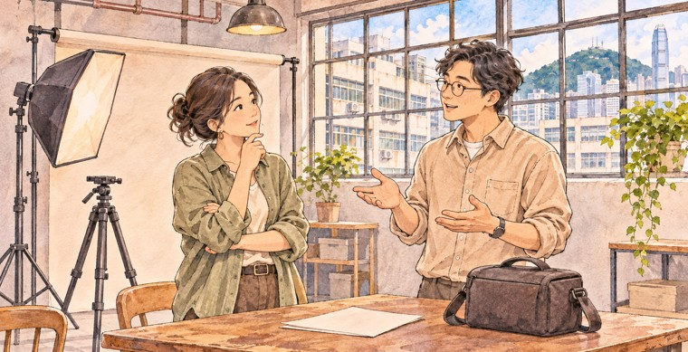

STR-06 · 香港 · 10–15分鐘 · 策略 · 競合 · 差異化
共用攝影室，也要共享優勢？

新聞裏 · 競爭對手可以就指定資源合作
2023年11月9日，香港通訊事務管理局批准一項涉及中國移動香港、Genius Brand、香港電訊及和記電話的頻譜互換及轉讓聯合申請。局方評估時考慮了技術效率、服務質素及競爭，並附帶條件批准申請。
新加坡電訊、Optus及TPG在另一份2024年4月的公告中，提到共用澳洲非都會地區的網絡資源，同時各自保留核心網絡及都會地區網絡。這些例子說明合作可以有明確範圍，並不證明共用所有資源都有好處。下文的攝影室均屬虛構。
課堂決定
虛構的課堂情境。 你在香港經營一間獨立的產品攝影室。一間與你競爭的攝影室提議，未來一年共用場地和基本攝影器材。你的年度場地及設備開支將由240,000港元降至160,000港元。
兩間攝影室都會保留各自的攝影師和客戶，並各自報價和定價。你們仍會競逐拍攝委託。你的攝影室還有一套別具特色的模組化佈景，能為客戶的產品營造辨識度高的視覺風格。這套佈景與攝影師的技藝同樣是你現有服務的核心。
兩個年度報價涵蓋相同類別的場地及設備開支，並已計入該年任何搬遷及設置費用。人手及其他營運成本不在比較之列。兩個方案你都負擔得起。節省的開支頗吸引，但你還未審閱方案所附的詳細使用安排。
| 未來一年 | 獨用場地 | 共用安排 |
|---|
| 你的場地及設備開支 | HK$240,000 | HK$160,000 |
| 你的攝影師及客戶關係 | 各自保留 | 各自保留 |
| 報價及向客戶收取的價格 | 各自釐定 | 各自釐定 |
| 資源使用詳情 | 由你的攝影室決定誰可使用 | 尚未審閱詳細使用安排 |
你的決定你會傾向共用場地及設備，還是保留獨用場地？作出承諾前，你會查清哪一項資源使用細節？
第二輪 · 改了一個事實
使用安排包括你那套別具特色的模組化佈景。對手不但可以使用通用器材，還可以預約這套佈景，為自己的客戶拍攝。160,000港元的報價涵蓋整套安排。對方沒有提出以同一價格共用其他資源而不共用佈景的方案。
兩間攝影室仍各自保留自己的攝影師及客戶關係。對手可以使用佈景，你便不能獨家使用，但對手不會因此就能複製你的攝影師的技藝或服務。現時沒有證據顯示有多少客戶會轉投另一間攝影室、兩間攝影室各會收取甚麼價格，或較低的場地及設備開支能否助你多接生意。
你的決定既然共用範圍包括這套特色佈景，你會接受原報價的安排、保留獨用場地，還是爭取修改條款？請說明你會維持哪項對客戶的承諾，或有意調整哪項承諾；若無法收窄共用範圍，你又會怎樣做？
分清局部合作與全盤讓步
競合是指在一項活動上合作，同時在其他活動上競爭。共用通用器材，不一定要合併業務、共享客戶名單或共同釐定向客戶收取的價格。要問的是，這項安排會把哪些資源變成雙方共用。
在這個個案裏，使用安排改變了方案的策略意義：共用的不只是通用的場地及設備，還包括一套對攝影室現有服務至關重要的佈景。即使兩間公司各自保留自己的名稱，也不能保住共用資源的獨家使用權。
節省的開支是實在的，但未必有策略價值
按報價計算，未來一年的場地及設備開支可節省80,000港元，即240,000港元減去160,000港元。這不等於已確定利潤會增加。個案沒有提供收入、其他成本及對手日後如何應對的資料。
如果攝影室選擇成本較低的營運模式，並預期自身的技藝、客戶關係或服務仍有足夠吸引力，接受方案可以合理。如果獨家使用佈景對攝影室選擇履行的客戶承諾足夠重要，拒絕方案也可以合理。單憑節省的開支，不能得出任何一個結論。
不只看自己擁有甚麼，也要問客戶重視甚麼
看看客戶為甚麼選擇這間攝影室，以及共用之後，有甚麼仍是他們在別處得不到的。要把佈景本身與攝影師的判斷力、準備工作、可靠程度和服務分開來看。這些因素可能互相配合；能用上其中一項，並不一定能複製整套服務。
找證據了解客戶是否願意為獨家使用佈景付費，以及他們已在使用哪些替代方案。個案沒有確定攝影室會流失客戶、定價能力會減弱或會多接拍攝委託，也沒有為獨家使用權訂出金額。不要為了支持自己屬意的答案而虛構這些影響。
劃清共用界線，備妥後備方案
修訂方案或可共用通用場地及器材，同時保留特色佈景供自己獨家使用。不過，須先確定這種安排是否可行、費用多少，以及實際上如何排期。不要不聲不響地刪去報價所附的條件，卻仍聲稱可節省80,000港元。
如果無法收窄共用範圍，就回到實際可選的方案：接受共用並主動調整所提供的服務，或付費保留獨用場地。雙方應繼續各自向客戶報價和定價。現實中，任何與競爭對手的合作都須經適當的商業及法律審查；課堂討論不等於批准協議。
教師說明
在揭示新資料前，請學生分別為節省開支和保留自主控制提出理據。然後請他們劃出界線，區分可共用的投入資源和支撐差異化的資源。好的答案會指出打算向客戶作出甚麼承諾，以及需要甚麼證據，而不是只說競爭對手絕不能合作。
若學生只建議談判，卻沒有提出後備方案，不應給分。對方尚未提出縮小共用範圍的安排。學生也不應把所有可能流失的客戶都視為必然流失，或假設攝影師共用一套佈景後，技藝就會變得一模一樣。
監管機構評估的是對整個市場的競爭及消費者有何影響；攝影室還要考慮自己的市場定位。兩者是不同的問題。企業自身得益，並不足以證明限制競爭有理。這些電訊安排不能互相援引為先例，也不構成對個案中的攝影室或現實營辦商的指控。
第二輪
使用安排包括你那套別具特色的模組化佈景。對手不但可以使用通用器材，還可以預約這套佈景，為自己的客戶拍攝。160,000港元的報價涵蓋整套安排。對方沒有提出以同一價格共用其他資源而不共用佈景的方案。
兩間攝影室仍各自保留自己的攝影師及客戶關係。對手可以使用佈景，你便不能獨家使用，但對手不會因此就能複製你的攝影師的技藝或服務。現時沒有證據顯示有多少客戶會轉投另一間攝影室、兩間攝影室各會收取甚麼價格，或較低的場地及設備開支能否助你多接生意。
你的決定既然共用範圍包括這套特色佈景，你會接受原報價的安排、保留獨用場地，還是爭取修改條款？請說明你會維持哪項對客戶的承諾，或有意調整哪項承諾；若無法收窄共用範圍，你又會怎樣做？